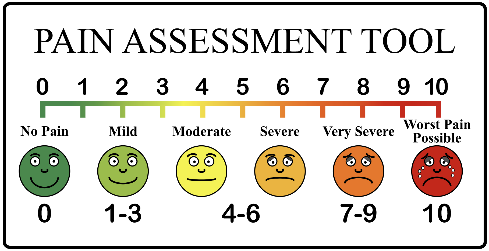
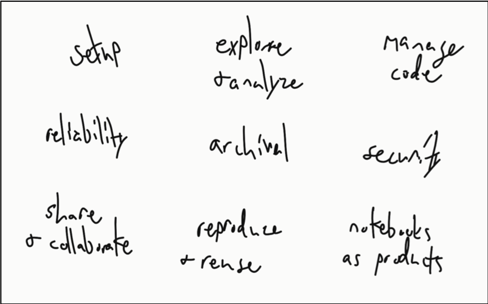

What's wrong with computational notebooks?
1/19/2020
This post is an informal summary of our recent CHI'20 paper, "What's Wrong with Computational Notebooks? Pain Points, Needs, and Design Opportunities". Check out the preprint for more details. Special thanks to Microsoft for supporting this work.
Update 1/29: See the discussion of this post on Hacker News.
Computational notebooks, such as Jupyter Notebooks, Azure Notebooks, and Databricks, are wildly popular with data scientists. But as these notebooks are used for more and more complex tasks, data scientists run into more and more pain points. In this post I will very briefly summarize our method, findings, and some opportunities for tools.
Method

To understand the pain points, we conducted a mixed-methods study that involved (a) observing 5 data scientists as they worked with notebooks, (b) interviewing 15 data scientists, and (c) surveying 156 data scientists. We transcribed the recordings from the observations and interviews, performed qualitative analysis on the transcriptions, and then used the survey to validate and triangulate the findings with a broader population.
Findings: 9 pain points

We identified the following 9 categories of painpoints based on our observations and interviews:
- Setup. Participants stated they often downloaded data outside of the notebook from various data sources since interfacing with them programmatically was too much hassle. Not only that, but notebooks often crash with large data sets (possibly due to the notebooks running in a web browser). Once the data is loaded, it then has to be cleaned, which participants complained is a repetitive and time consuming task that involves copying and pasting code from their personal "library" of commonly used functions.
- Explore and analyze. Modeling and visualizing data are common tasks but can become frustrating. For example, we observed one participant tweak the parameters of a plot more than 20 times in less than 5 minutes. Moreover, building models break the quick and iterative workflow of notebooks since it can take several minutes or longer to finish.
- Manage code. Notebooks do not have all of the features of an IDE, like integrated documentation or sophisticated autocomplete, so participants often switch back and forth between an IDE (e.g., VS Code) and their notebook. One participant we observed kept both windows side-by-side and copy and pasted code between the two windows rapidly as they worked. Another major pain point is managing package dependencies. Participants also indicated that they develop their own processes for debugging and testing, and some expressed irritation with the lack of tool support.
- Reliability. It is not uncommon for a notebook's kernel to crash in the middle of an operation, which may leave the notebook or data in an inconsistent state without proper feedback to the user. Participants commented that they find it easier to just restart and run the entire notebook again with hopes that it doesn't crash. Additionally, notebooks have limitations when it comes to big data, which requires users to move to a different tool set (e.g., Java or Python scripts).
- Archival. Participants expressed much difficulty with using version control systems for notebooks. For example, the outputs are saved in the notebooks along with metadata, which will always indicate changes to the version control system. Searching and finding information from previous notebooks is also an unsolved challenge.
- Security. Participants were concerned about sensitive data that may need to be masked from other users while still allowing them to execute the notebook. Notebooks also don't support restrictions such as read-only or run-only, thus requiring external tools to enforce access.
- Share and collaborate. While it is easy to share the notebook file, it is often not easy to share the data. For example, the data may require access to a database. Participants said that they often need to create documentation to explain how to install and setup any necessary dependencies to run a notebook. Furthermore, there is missing support for sharing the notebook results with others, especially non-technical users, for the purposes of reports or presentations.
- Reproduce and reuse. Due to the dependency issues and environment settings, it is unlikely that a notebook will work out of the box. Reusing even small portions of a notebook is difficult due to package dependencies and even dependencies on other cells within the notebook.
- Notebooks as products. If a large data set is used, as one might expect in production, then the notebook will lose the interactivity while it is executing. Also, notebooks encourage "quick and dirty" code that may require rewriting before it is production quality. For example, participants indicated that notebooks are not always designed to be executed top to bottom, which will require additional work to fix the execution order for a standalone artifact.
Opportunities for Tools
Our findings highlight numerous opportunities for tools. From my own observations and conversations with data scientists, I think there are three major areas that tools should support:
- Traditional development tools. Notebooks are missing features that traditional IDEs have, such as autocomplete, documentation, debugging, unit testing, and refactoring. We observed participants repeatedly moving between tools to utilize these different features. Should IDE features be moved into notebooks or should notebooks be moved into IDEs?
- Cleanup and extraction. There are opportunities for tools to aid in cleaning up notebooks before archiving, sharing, or productizing. Since a lot of notebooks are started for exploratory purposes, it can be a lot of work to clean them up or to extract specific portions.
- Feedback of notebook state. Notebooks could provide more feedback to the user. What is the current state of the notebook? Which cells are dependent on each other? Which cells should be re-run?
Hopefully this paper provides evidence for the need for more research in this area! For a lot more details, take a look at the full paper and let me know if you have any questions.